🎀 ¡Feliz Cumpleaños Negrita! 🎀
Probablemente ya te haya mandado un texto inmenso para desearte tu cumpleaños perooo
Aquí podras mirar y leer todo lo que me has hecho sentir en esta vuelta al sol que completaste
Este video lo grabé mientras hacía la pagina jajaja, son unas palabras de apertura pero queria que me vieras la cara mientras te lo decia. Me tocó dividirlo en dos partes por que no me deja subir archivos tan pesados, tambien por eso la calidad.
📸 Nuestros Recuerdos
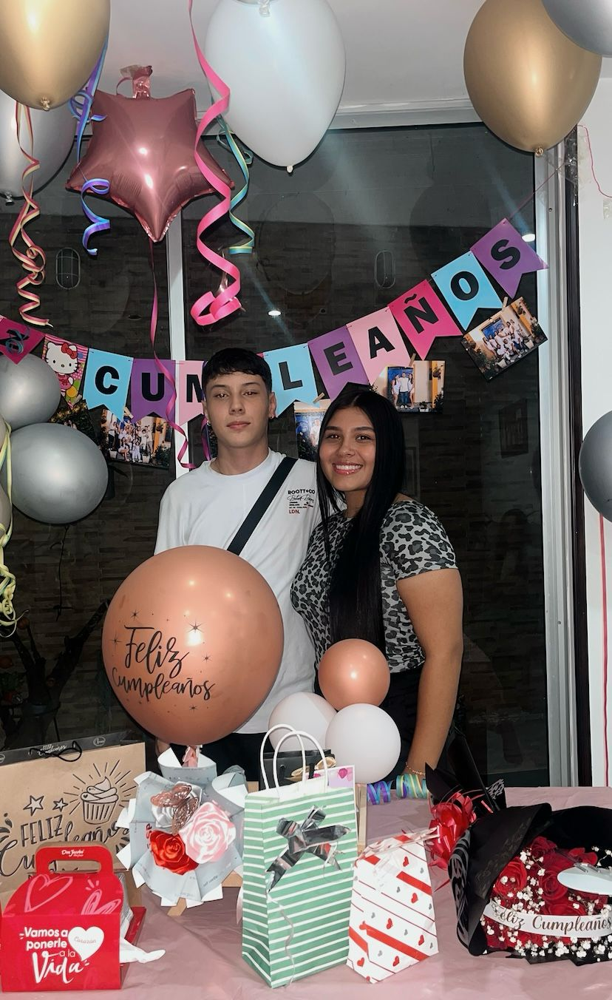
Esta imagen no deberia ni explicar porque es tan especial, fue exactamente hace un año quien lo iba a creer que esos dos niños de ahi iban a terminar tan enamorados y no dejar las cosas como algo pasajero.
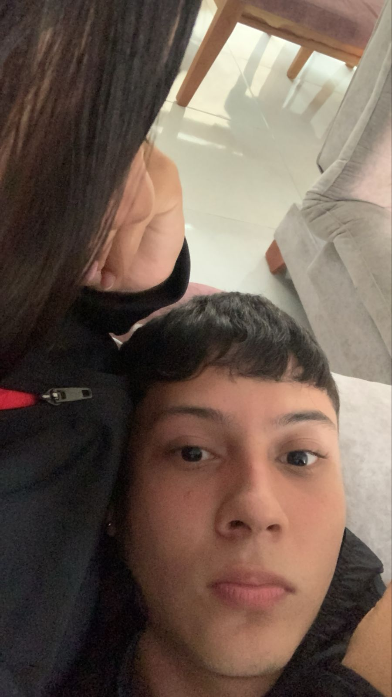
Aqui empieza a contar, fue la primer foto que me atrevi a tomar, tras de que se me ve la cara toda chistosita tú ni te ves, pero eres tú, lo juro.
Este fue el primer video que grabamos donde nos vemos los dos, la verdad es tan hermoso ver como sonries y como nos ibamos ilusionando cada vez más.
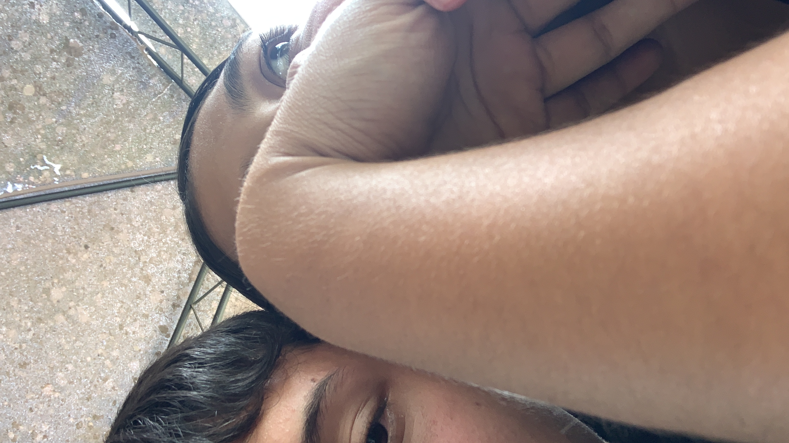
Aqui fue cuando de la nada saliste con que nos fueramos a esa finca con tu mamá, otra vez yo tomando fotos medio "escondidas" porque me daba pena, sin embargo ese día nos abrazamosss nos dimos muchos picos frente a tu mamá y ya era como "Dios, tan recocha no somos", desde aqui me empezo a dar mucha confianza volverme chicle.
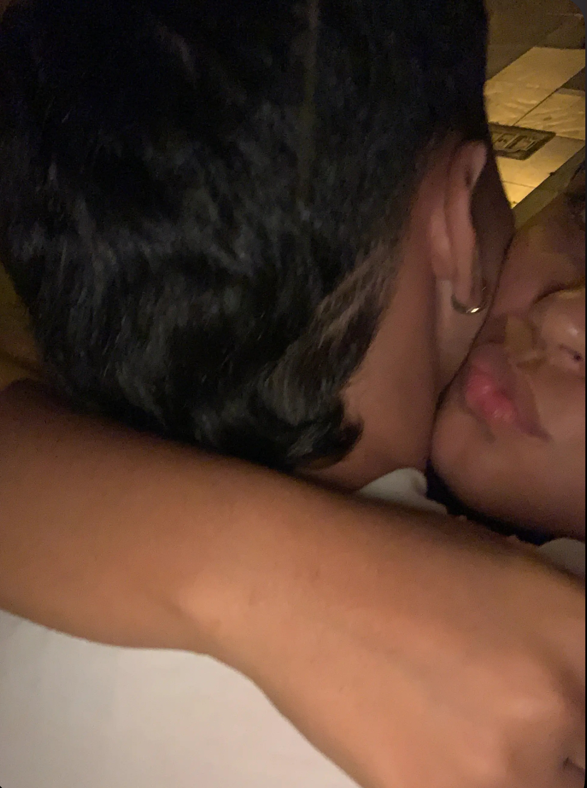
Empezaste a tomar fotos tú, tambien un poquito escondidass pero era porque ambos estabamos nerviosos, aqui la verdad ya me gustabas un monton.
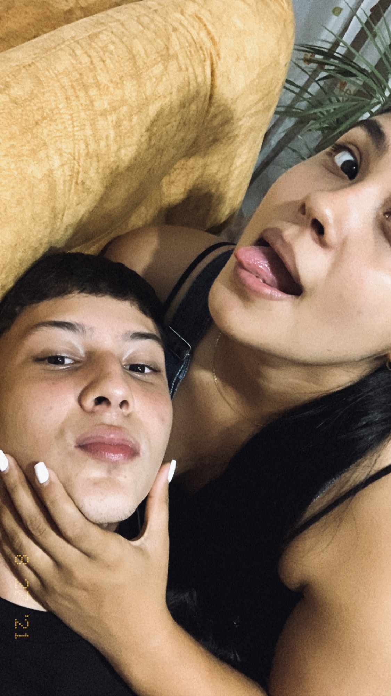
Ya nos tomabamos unas foticos no tan decentess pero ya se nota mucho la confianza, la verdad de los días más lindos contigo.
Este video es hermoso, la verdad, cuando lo veo pienso en lo mucho que deseaba estar contigo, me sentía en las nubes, cada vez que te reías me daba una sensación que es muy dificil de explicar (aun me pasa) pero en aquel entonces la empece a sentir.
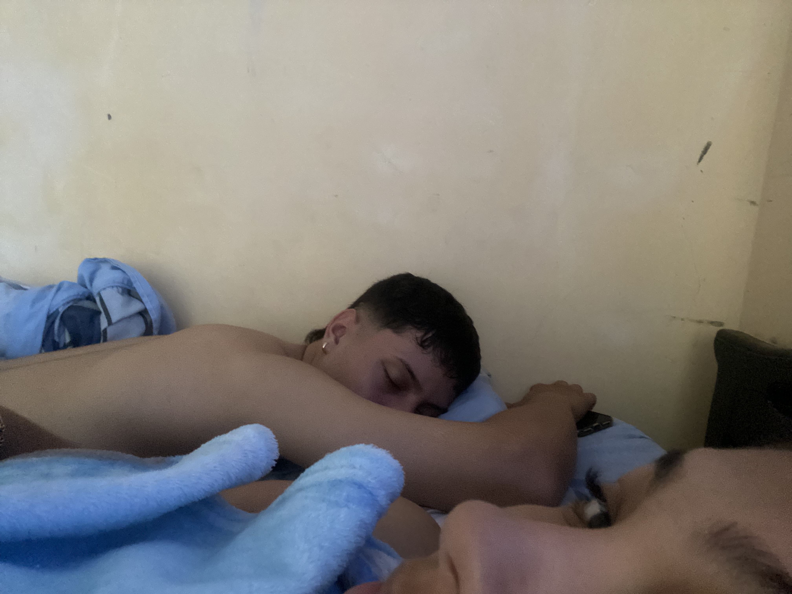
Quizás con esta daño un poco la estetica, porque me veo ahi todo dormido jajaja, pero la páz y la tranquilidad que me das, de sentir que estas ahi al ladito asi sea sin decirnos ni una palabra.
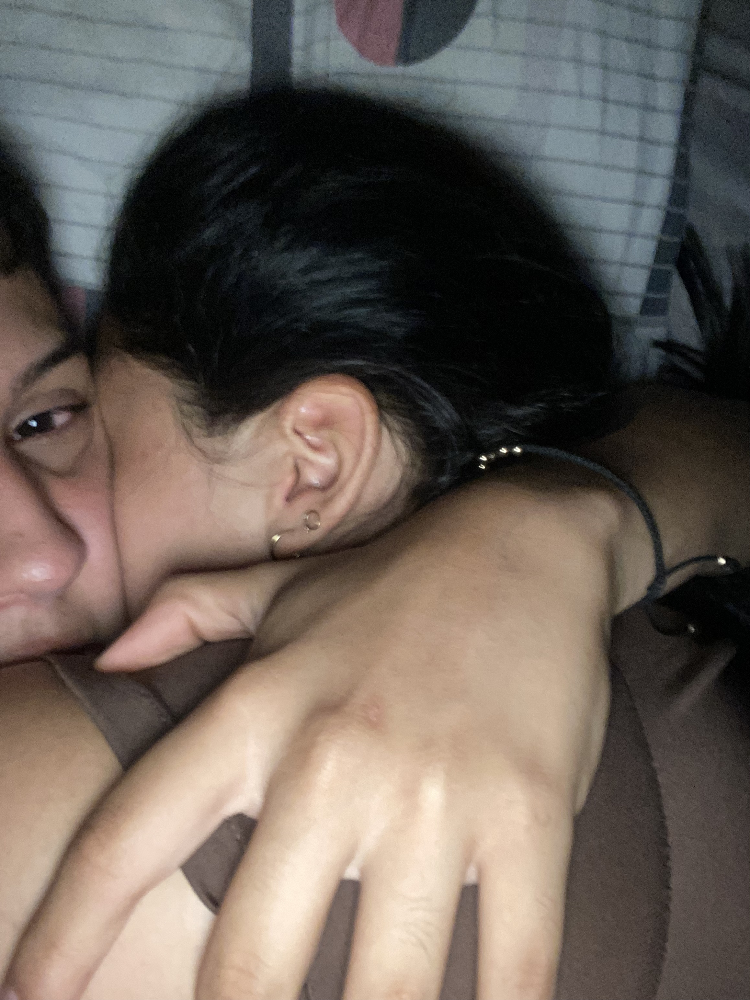
Estabamos recien dejaditos pero recien volviditos, otra vez, me encanta arruncharme contigo, a veces me divierto un monton, a veces solo quiero dormir, a veces tin y a veces simplemente existimos juntos, pero siempre siempre siento un amor muy puro, hagamos lo que hagamos.
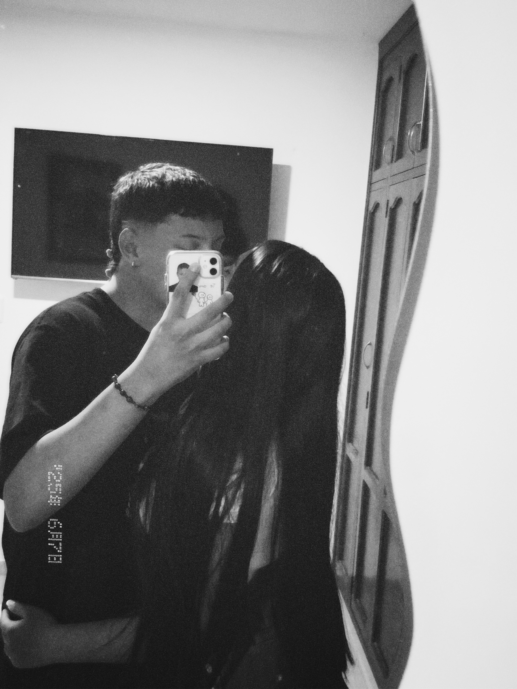
Esta foto me encanta, mi negrita chiquita que se creció. Almenos de edad.
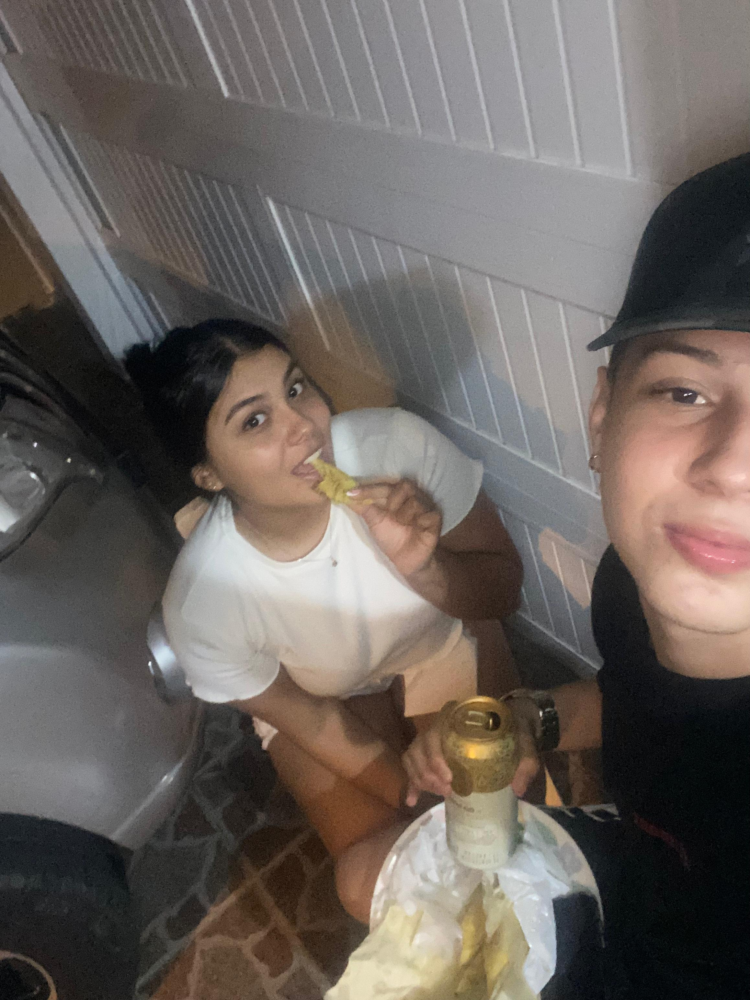
Estos eran los mejores parches, era estar con mi persona favorita, la que mas me hace reir, la que mas amo, la que mas quisiera a mi lado, poder solo parchar, conversar y pasar tiempo de calidad pero a la vez poder agarrarte y darte un beso porque me encantas, es lo mejor del mundo.
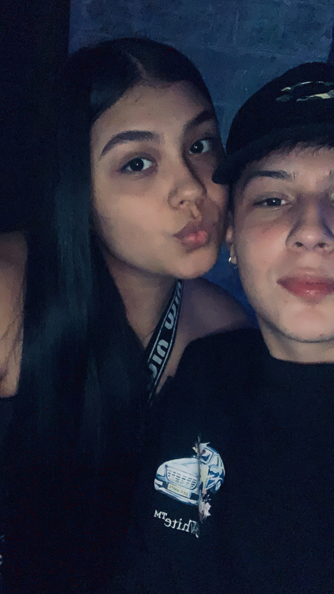
Pasamos un buen rato en la calleee, hicimos un plansito espontaneo, comimos con tus papás y luego nos fuimos a tomar algo, la verdad ese día me sentia muy unido a ti, como si nos fueramos a casar al otro dia.
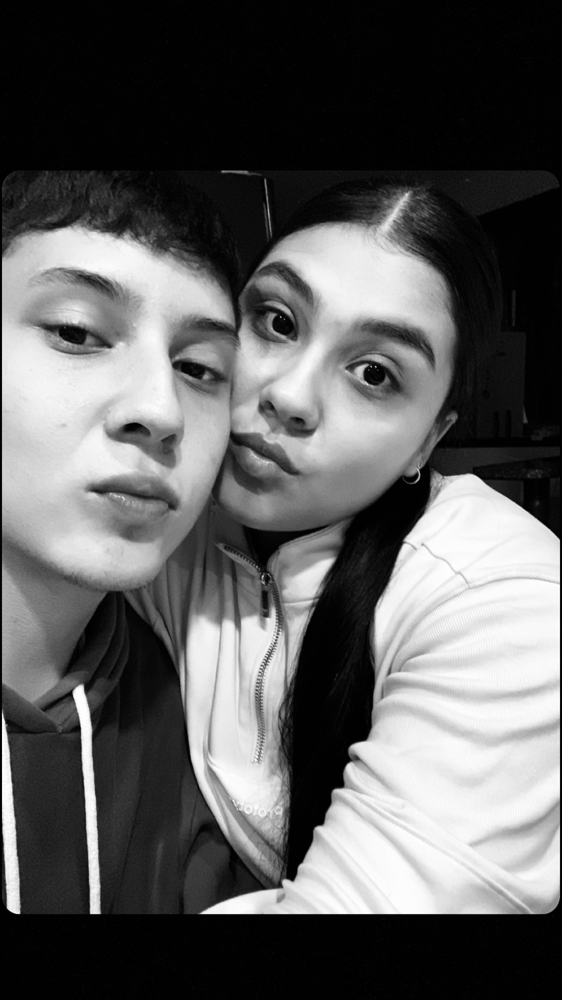
Esta foto tambien es de mis favoritas, con solo verte esa carita, recordar esa sensación de tener frio, tener saco y estar siendo abrazado por ti, me hacia sentir como un niño chiquito muchas veces, abrazarte es de mis cosas favoritas en el mundo.
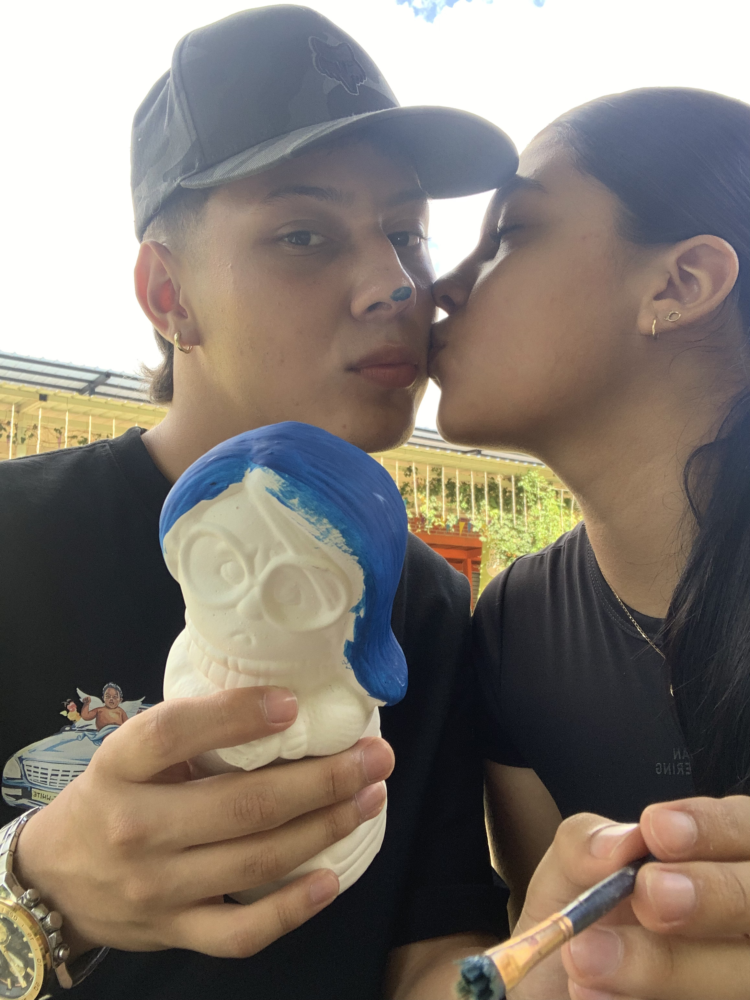
Este día que salimos con tus papás, me empece a sentir mucho más parte de la familia, la verdad me encantó mucho este día, nunca habia llegado hasta un punto así con nadie y la verdad agradezco que haya sido con alguien que realmente amé, amo y amaré. Aparte hicimos una de tus cosas favoritas o de lo que mas te relaja, que es pintar, aunque no lo hagas mucho conocí esa sensación de páz, no te podré decir si fue por estar contigo, por pintar o por estar con el amor de mi vida, o por ambas.
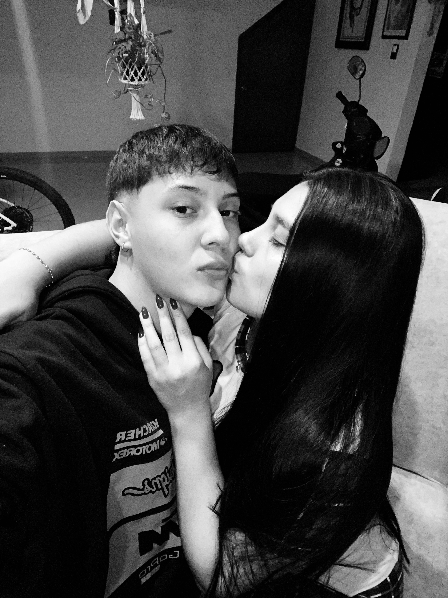
Esta foto tambien me gusta muchisimooo, me encanta cuando me das besitos, aparte asi con la pijama y eso, es como Dios mio, tan chimba seria enpijamarnos y dormir juntos toda la noche.
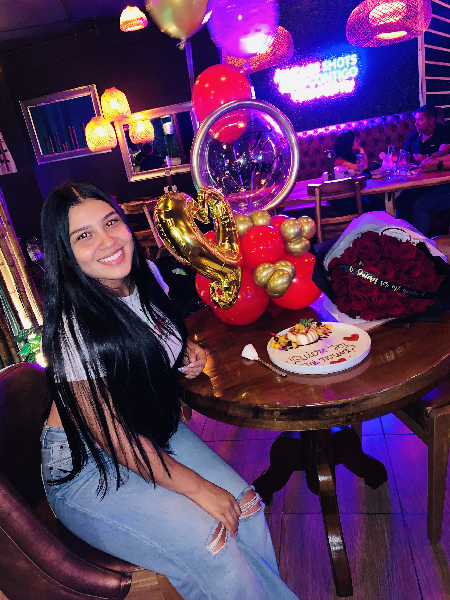
Ya para finalizar, esta foto igual, es de mis favoritas porque aparte de que es la mujer que mas he amado sin ser de mi sangre, es porque este día en particular, me senti tan ansioso, sentí que iba a hacer una de las cosas mas importantes de mi vida y me di cuenta que sí lo fue, aunque aqui ya llevabamos tiempo juntos, me di cuenta con el tiempo de que realmente eres la primer relación que tengo, algo real. Así digas que no, estabas hermosa, te veías super preciosa con tus rosas, quisiera haber dado el triple, pero me esforcé para hacerlo de una forma linda, esa noche me acosté siendo el hombre más feliz del mundo.
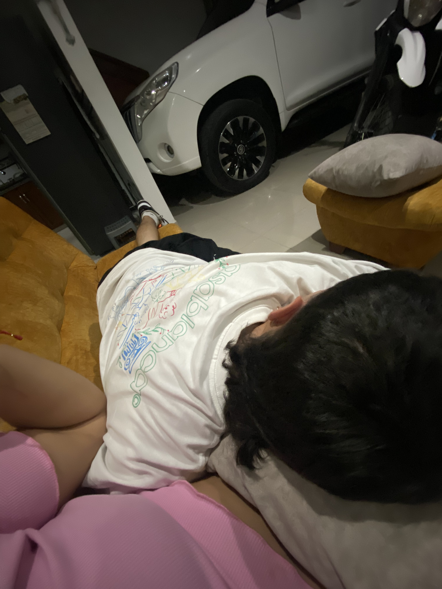
Ya finalizando, siempre quiero estar asi, como un chicle, abrazandote, dandote besitos, que me acaricies y decirte cuanto te amo, a veces quisiera vernos todos los días como lo haciamos aqui. Y se que quizás faltaron más fotos, más videos, pero tenemos muchisimos, aparte me conoces, a veces me pongo bien cursi y si fuera por mi pongo los mensajes, las notas y hablaria de todas las veces que fui feliz contigo y no tomamos ni una foto. Te amo. Siga al mensajito.
💌 Mensaje
Se que te mandaré alguno muy parecido el 18 a las 12:00 a.m. pero este, lo vas a tener aqui, para leerlo cuando quieras.
Lunita, amor, cielo, corazoncito, vida. Hoy que cumples otra vuelta al sol, quiero desearte lo mejor, espero si hayas recibido un detalle de mi parte, se que quizás ya es un poco aburrido estas paginas, pero si logré poner el video, ahi lo expliqué y vuelvo y te lo explico, esto no es solo una pagina web, soy yo Julián, un sabado de marzo, haciendo lo que son para mi las cartas de amor, las cosas que no hago por nadie las cosas que no se me ocurren por nadie y ahora terminando de hacerlo un lunes, recien salido del sena, con sueño hambre, con las horas contadas para poder hacerlo pero para mi lo vales, vales todo esto que intento demostrarte y hasta más, nunca voy a estar ocupado para ti, siempre voy a tener el tiempo para dedicarte algo bonito.
Aunque te conocí no se con cuantos años y empezamos a hablar cuando tenias 16, aunque ambos sabemos que fue muy pronto a tus 17, esos 17 (tanto los tuyos como los mios), los vivimos completamente juntos, a excepción de unos meses pero realmente nunca nos hemos podido alejar del todo. Se que las cosas entre nosotros nunca han sido faciles, siempre han habido obstaculos, algunos los supimos pasar juntos, quizás en algunos nos estancamos más, pero al fin y al cabo somos dos culicagados que estan aprendiendo a vivir, nisiquiera podemos convivir con nosotros mismos y nos enojamos solos, pero negra, en este año me hiciste tan feliz, nunca quisiera alejarme de tu vida, de si pasa o no, no lo se, quizás volvamos a estar juntos, quizás nunca más, quizás mañana, la otra semana, el otro mes, el otro año, quizás nunca más, en fin, no sabemos lo que pase en el futuro, pero solo se que conocí a la niña más hermosa, que me enamoro completamente, que tiene un gran corazón, que siempre se preocupa por los demás, que la vida ha sido cruel con ella desde un principio, pero sigue luchando con todo, hasta consigo misma, que tiene una fuerza muy grande, que se merece lo más lindo del mundo.
Espero en este cumpleaños la pases bien, quisiera estar ahi y darte un abrazo, un beso y recordarte una vez más lo importante que eres para mi. El ramo de rosas que te di o que te hice llegar, es una demostración de que así como el año pasado, aún me sigues gustando un monton jajaja, se que muchas cosas han cambiado, pero ahora siento un amor muy grande por ti, amor que ese niño de 17 años estaba a punto de experimentar. Ademas de esto, recuerda que aqui tienes a hombre que te ama un monton, que desea que seas feliz en este día.